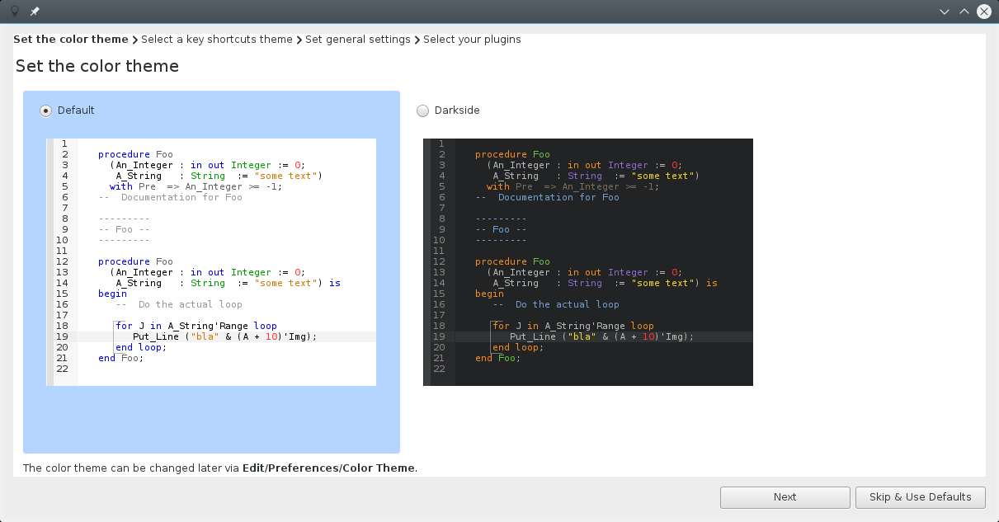
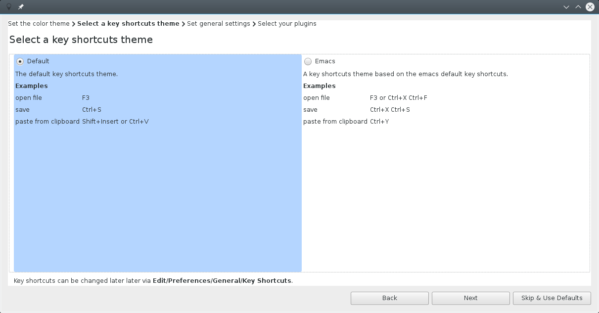
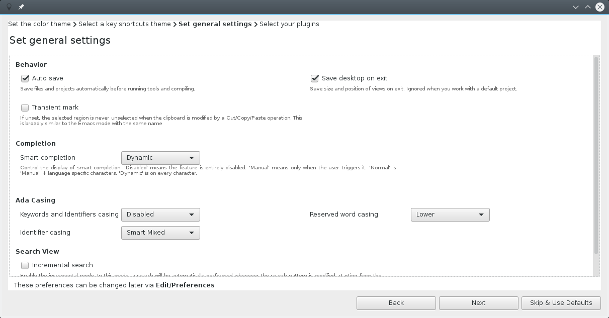
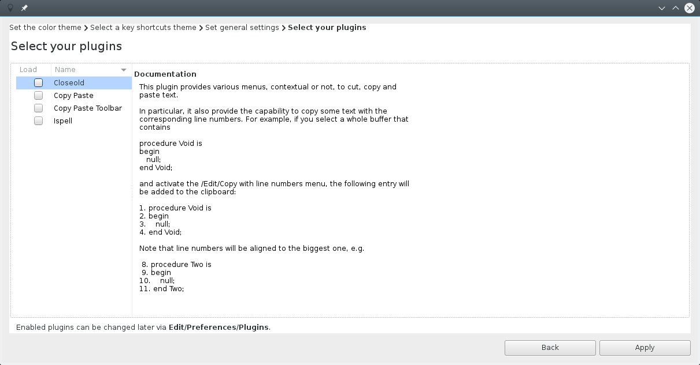
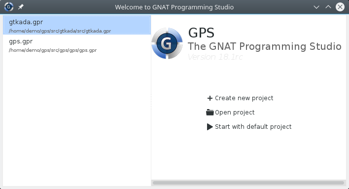
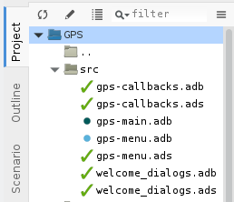
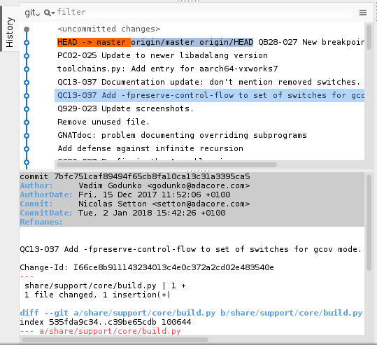
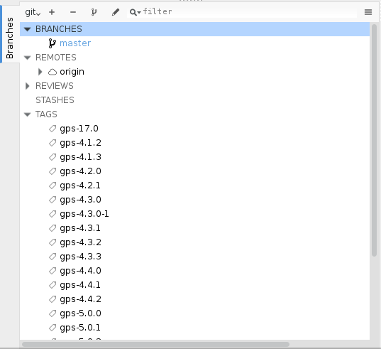
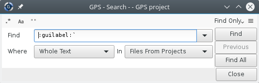

GPS 18 Release Notes¶
Release Date: October 2017

The main goal for the development cycle of GPS 18 was to improve stability, and a better experience for newcomers. It includes a number of new features as well.
Preferences Assistant & Welcome Dialog¶
When starting GPS for the first time, a preferences assistant wizard allows you to quickly customize GPS to your preferred way of working. You’ll be able to change the following settings through this dialog:
   
- color themes
- key shortcuts theme
- general settings
- plugins
The GPS welcome dialog has been reworked: a list of recently opened projects is now displayed on the left side.
Version Control Support¶
The support of the version control system has been rewritten from scratch. Multiple version control systems and repositories are supported within the loaded project tree. The VCS Explorer and VCS Activities views have been replaced with new views. The Project and Files views now show the VCS status for files.
The History view shows the set of commits that were done in the repository in the past, along with a graphical diagram showing how branches were created or joined. This makes it easier to understand how the commits relate to one another.
The Branches view lets you view and switch between existing branches, to create new branches, and to delete branches. If you are using git, you can also use this view to apply view stashed commits.
Support has been added to execute special VCS operations when a file needs to be made writable (which is useful for ClearCase, for instance).
All VCS operations are now performed much more efficiently, and getting the status for objects is almost instantaneous on most working directories.
Debugger¶
The Assembler view highlights assembler instructions, registers and addresses. It has a local toolbar for quick access to disassembly operations.
The Variables view allows to control format (display base) of variables via the contextual menu.
The contextual menus have been reintroduced in GPS.
The Debug section of the contextual menu provides entries to control breakpoints (set, remove, disable, enable).
The GDB/MI protocol is supported and can be activated via the Debugger section of the Preferences dialog.
Test View¶
A new dedicated Test view’ was added to present tests, test cases and corresponding sources available in the project.
Outline¶
The expanded/collapsed state of the “withs” node is now preserved when switching between sources.
The Outline View is now able to present entities grouped by categories. This is enabled via a new preference Group by category, and works only in flat view mode.
Codefixes¶
Code fixing capabilities was enchanced to handle more messages from the compiler:
- loop expression is replaced by Range attribute when compiler detects that Range attribute should be used to loop over the content of an array
- removing of redundant “with” clauses now removes any accompanying “use” clauses
- incorrect prefix of Result attribute replaced by the expected one
Workflows¶
A Build & Run and a Build & Debug toobar button have been introduced. Clicking on these buttons has for effect to build the selected executable, and perform the second action (either Run or Debug) if the build was successful.
Projects Support¶
The Interfaces attribute is now editable from the page of the Project Properties editor.
GPS no longer offers to edit project properties of a read-only project file.
A new attribute Read_Only can be placed in the IDE package of a project to prevent GPS from displaying the graphical editor on this project.
When applying changes made in Project Properties to all the possible values of a given scenario variable, no useless switch case is written in the resulting .gpr file.
We no longer display the list of entities defined in a file, in the Project view. This information is already available in the Outline, whenever a file is selected in the Project view. Removing it allowed us to speed up the display of the tree view.
Search & Replace¶
The GPS Search view has been completely revamped. The usability has been improved and an interactive mode has been added.
Every Search/Replace action is now available from the keyboard.
The number of entries in the Search view combobox is now limited to 5 when the view is spawned. A separator has also been added between the predefined regexps and the previously searched patterns.
GPS now reports in the Messages window the number of occurrences that have been replaced when Replace All button of the Search view is clicked.
Source Editor¶
A new status indicator has been placed in the bottom-right corner of source editors, showing whether the editor has been modified.
A new action insert extended character has been added, allowing one to enter an extended character in the editor by its unicode number.
GNATdoc¶
GNATdoc is now able to process bodies, and extract documentation from bodies and generate separate pages for these bodies in the resulting HTML output. This is activated via the command-line switch ‘-d’.
GNATdoc now supports processing Ada 83 and Ada 95 codebases, in addition to Ada 2005 and 2012.
Detailed information is generated for task and protected objects, including their subprograms and entries.
Miscellaneous UI improvements¶
Key shortcuts are now displayed in GPS contextual menus.
The menu separators have been made more visible in dark themes.
Icons were added in the Window menu for editors. This allows displaying which editors are currently modified.
The labels containing the base name and directory of a file in the Properties dialog are now selectable, which means you can copy/paste from them.
GNAT runtime menu items for cross platforms have been moved into a separate submenu of runtime instead of placing them after Help/About submenu.
GPS now includes a new button to the right of the main toolbar, to let users easily switch perspectives.
The Go declaration ... item is no longer shown when the subprogram does not have a declaration. Instead, the contextual menu only shows Goto body ....
The local configuration menu of the Locations view now contains an item Preserve message to control whether to keep build messages for files that are not being recompiled.
The Files view now reuses the same preference as the Project view to hide some files (those starting with ”.” by default, although this can be configured in the preferences dialog).
Creating Projects and Files views is now much faster, in particular on large projects where a directory contains several thousands of files.
A menu has been added to run GNATname on project loaded by GPS.
The Memory Usage View has been improved. It is now able to display the static memory usage for memory regions, sections and object files, even when the link has failed.
If the Metrics view is already present, GPS will reuse it when computing metrics of a file/project.
Deployment of examples: GPS now asks to specify a directory for deploying GNAT examples via the HELP/GNAT/Examples menus, rather than opening examples in the location where they are installed.
New contextual menus have been added to create new files from templates (e.g: ‘New Ada Package’ contextual menu in the Project View). These templates are derived from the aliases mechanism and a Python API has been introduced to allow users to create their own templates.
GPS Customization¶
Python API¶
A new method GPS.Message.create_nested_message has been added to create nested messages.
It is now possible to create Tasks from the Python API, and to create tasks that monitor a workflow. This can conveniently replace some uses of the GPS.Timeout API, and integrates within the GPS Task Manager, allowing to provide progress indication for background tasks.
Python API of Libadalang is available for plugins, and can be used in GPS plugins to implement custom code checkers.
The GPS.Debugger provides new methods to manipulate frames - current_frame, frame_down, frame_up, frames, select_frame.
The scripting API has been enhanced with an add_debounce method which can be used to schedule callbacks to be called as soon as GPS is idle.
Platform Specific Improvements¶
Mac OS¶
A Mac OS Key shortcuts theme has been introduced in GPS, using the Command key instead of the control key in many places, and defines common Mac OS (e.g: ‘control + a’ to go to the beginning of the current line).
Windows¶
The colors used for selected items have been improved to make them more readable by default.
Linux¶
Electing an item now deselects any other unless the user is pressing a modifier key.